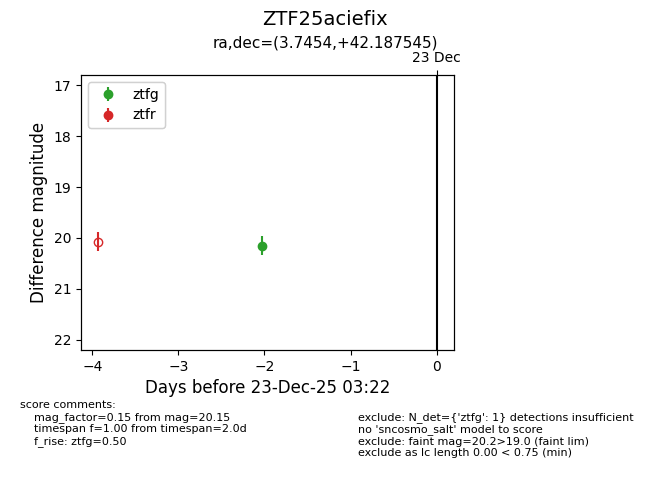
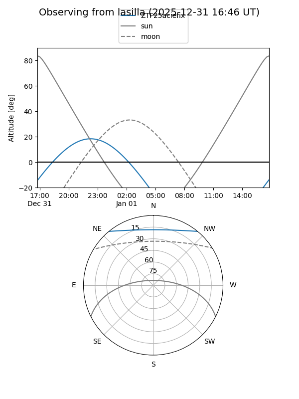

ZTF25aciefix
Target ZTF25aciefix at 2026-01-09 12:49
Aliases and brokers:
FINK: link
Lasair: link
ALeRCE: link
alt names
ZTF25aciefix (ztf,fink_ztf)
Coordinates:
equatorial (ra, dec) = 3.7454,+42.18755
equatorial (HMS+DMS) = 00:14:58.90,+42:11:15.16
galactic (l, b) = (115.7489,-20.17517)
Flags:
Photometry:
last ztfg=20.15
1 ztfg detections
Lightcurve

Visibility


Additional plots